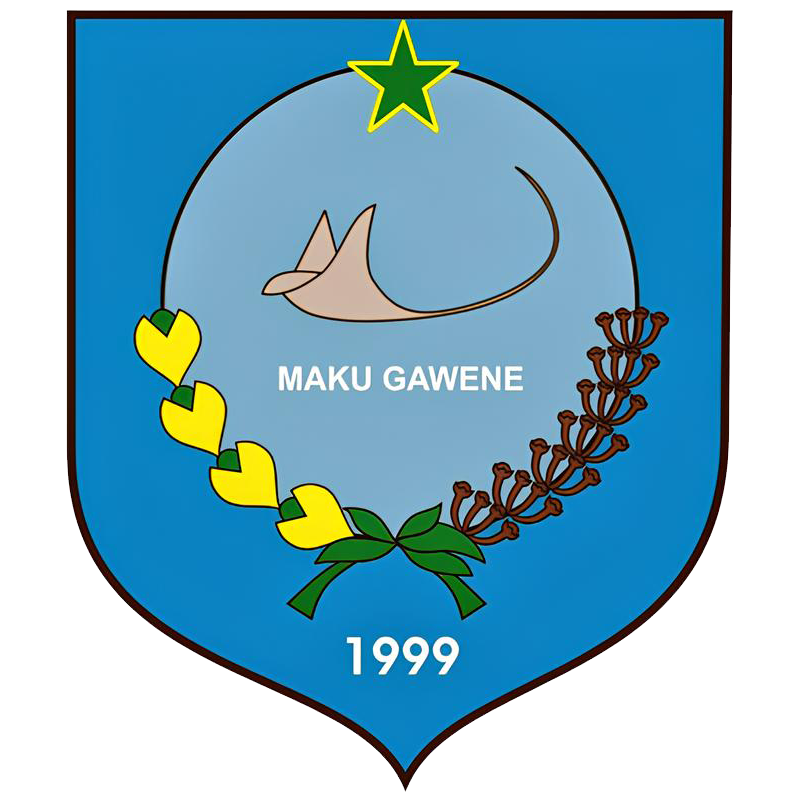
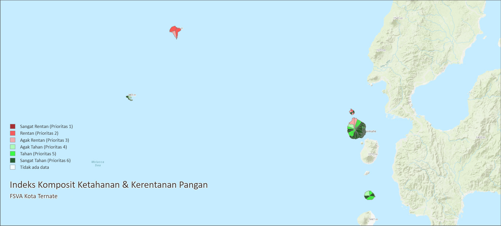

Panel Informasi Binketra
Beranda
Dashboard
Ketersediaan
Kerawanan
Kerawanan Pangan
Peta FSVA dan tutorial akses Kota Ternate
Peta FSVA Kota Ternate
+
−

Tutorial Akses FSVA Kota Ternate
Buka Website FSVA